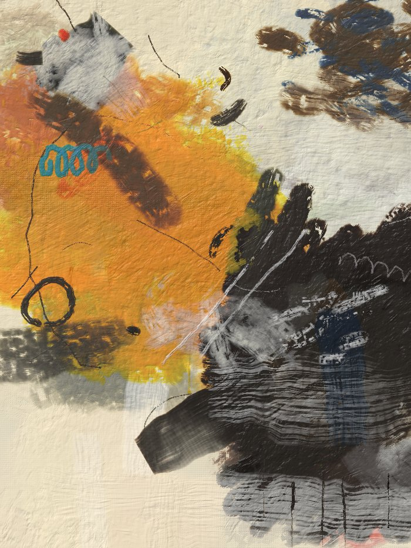
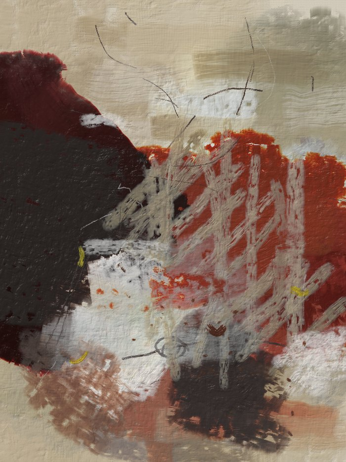
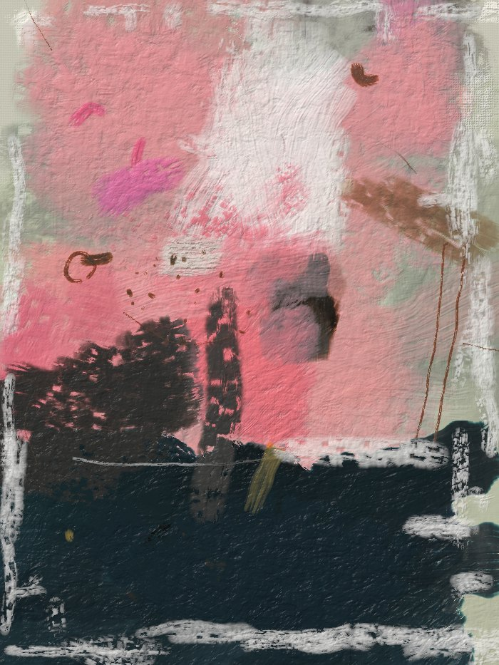
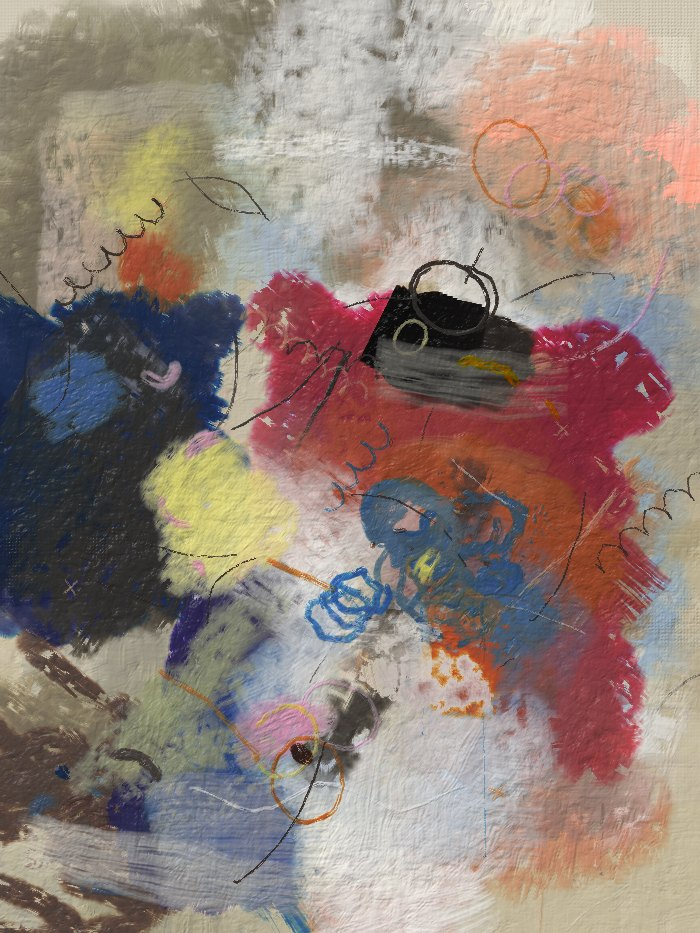
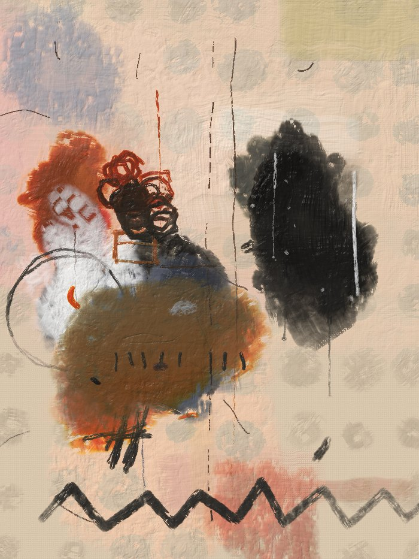
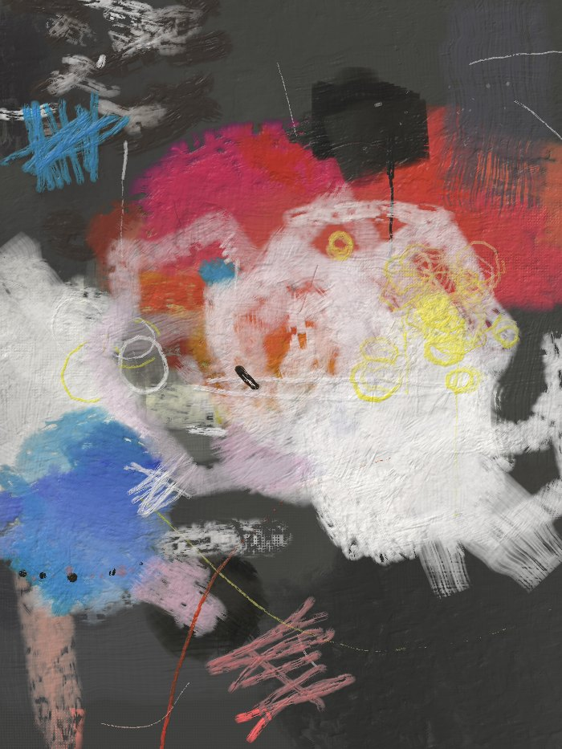

2026 · Generative painting · Art Blocks
Abstracts in acrylic, painted over several sittings, each one covering the last.
Veladuras paints an abstract in acrylic the way a painter does: over several sittings, each one covering the last. A toned ground is worked and scraped; two or three generations of earlier shapes are laid under it and half-buried with a pale veil; the masses go on in an armature of warm against cool, lead against deep; a later sitting buries their edges in field colour and scrapes back through it before it dries; the newest paint goes on last.
Nothing is drawn — every mark is a loaded, drying, dirtying brush, a knife or a rag on a simulated acrylic surface, with the pigments mixing by Kubelka-Munk. What you see when the token loads is that process happening, and what remains is a surface with a memory.






Each token is one painting, planned once from its hash and painted at any resolution to the same picture. On the token page you watch the sittings go down; that is not a loading animation, it is the work.
Veladuras is the second work on my acrylic paint simulation, after Pentimenti. Pentimenti was about the correction: a shape moved, the old one showing at the edge. Veladuras is about the covering.
Every real abstract I keep coming back to was painted over days. You can see it: a pink under a pink, an ochre ghost under a grey, a scraped patch where a knife went back through a veil that had not quite set. The picture is not a composition laid down once; it is the top of a stack, and the stack shows. I wanted an algorithm whose output has that property for the same reason a painting does — not painted to look layered, but layered.
So the engine is a surface, not a drawing tool. Each pixel carries a cured film and a wet film; a fresh coat over a cured one starts a new film and the old one becomes history; a knife scrapes the wet film down to a translucent facet and carries the surplus away; a dry brush catches only the ridges of earlier strokes; the colours mix as pigments mix, so a thin white over a dark is milk and a thin dark over a pale is a glaze. A brush is a reservoir that runs dry and picks up what it crosses. Bristles drift and lift. The blade wobbles. Nothing is stamped.
On that surface the painting is planned as sittings. A ground is worked thin, wiped, scraped. Two or three generations of earlier shapes go on in off-colours and are half-buried under a pale veil, and while the veil is open an unloaded blade goes back through it. The masses come in an armature — a dominant warm mass off-centre, a deep zone leaning on an edge, a smaller cool mass, a light slab, a few small darks — each painted first in another colour, cured, then built again in two or three tones, knifed, dragged out dry at the edge. A later sitting buries their edges in field colour and scrapes back before it closes. The newest paint goes on last. A third of the canvas is kept quiet and calmed with wide veils at the end. Then the responses: a contour re-drawn where a mass was moved, a hatch that notes it, a seam of fluorescent colour along a boundary, a ring drawn three times that never closes.
The vocabulary was not invented. I measured seven sets of paintings I love — their value range, their chroma, how massed they are at the scale of a hand, how much of the surface is dead-flat — and built to those numbers, and I sorted hundreds of outputs and fitted the weights to what I kept. The registers are the five densities those paintings actually came in. The palettes are theirs and mine.
I
The worked greige. Two generations buried under a veil, the masses built and re-built, a third of the canvas kept quiet.
II
Raw canvas and a few events — bars or scattered incidents on an almost bare ground, one thing said.
III
One colour to the edges with an unpainted rim: a block, bands, three flat zones with a drawn contour, or a wash.
IV
The all-over garden, or a collage of slabs — ten to fourteen ghosts under everything, the responses stacked.
V
A grey or oxblood ground drawn on in crayon and pen, the light kept for loops and a scribble of sky blue.
Format
Portrait 3:4
Every token. Planned nominally, so any resolution is the same picture.
Palettes
27
Measured from the references, curated by hand. Weighted, not uniform.
Engine
Pure JavaScript
No libraries. A two-film acrylic surface with Kubelka-Munk mixing, written for this work.
Traits
Eleven
Register, mode, palette, lead, hand, quiet side, generations, masses, gesture, marks, notable.
Veladuras is being released as a long-form generative project on Art Blocks. The release date, edition size and price will be announced here and on Instagram and X.
Art Blocks page · coming